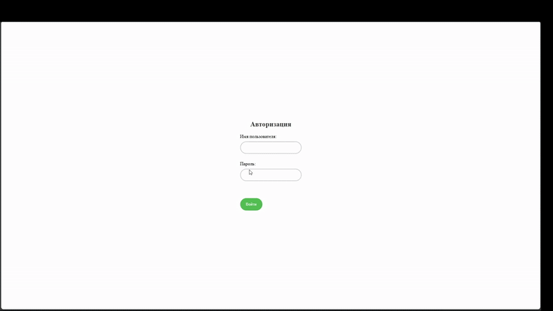
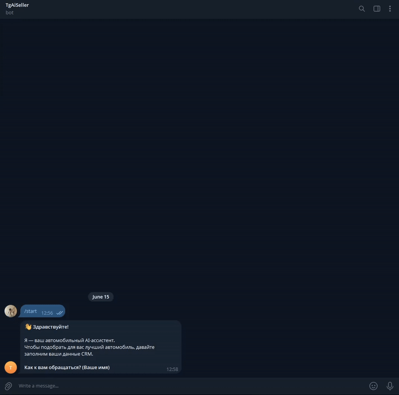
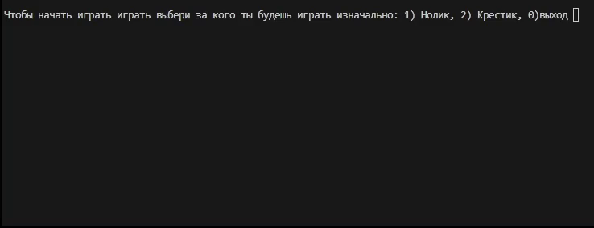

Проекты

Логистический веб-сайт
Веб-приложение для покупателей и администраторов. Реализована система заказов, корзина и управление товарами.
- Корзина товаров
- Создание и обработка заказов
- Статусы заказов
- Админ-панель

Telegram RPG Bot — Barabulka
Игровой Telegram-бот с backend логикой и Mini App интерфейсом.
- Игровая механика
- Работа с базой данных
- Telegram Mini App

Telegram AI Assistant
Ассистент на основе API, интегрированный в Telegram.
- Работа с API
- Обработка сообщений
- Backend логика

Console Tic Tac Toe
Консольная игра с собственной логикой и обработкой координат.
- Игровой цикл
- Проверка победы
- Работа с вводом